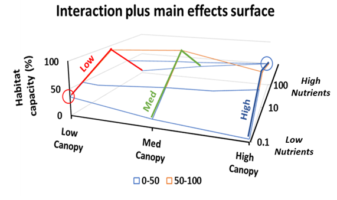

Appendix B — Socio-economic Evaluation of Restoration Actions
C Socio-economic Evaluation of Restoration Actions
The Joe Model and Life Cycle Model components of the CEMPRA tool primarily focus on status, condition, and relative risk rating(s) among assessment units, scenarios, and stressors, providing insights when formulating management priorities for a watershed or study system. However, First Nations, industry, governing bodies, and conservation initiatives/collaboratives seeking to mitigate stressors within a framework of potential restoration actions need to understand the comparative costs of competing management interventions. To address this need, the socio-economic component of the CEMPRA tool generates an overview of the costs and effectiveness of user-defined management strategies associated with stressor reduction. The socio-economic component attempts to provide a high-level cost-benefit analysis of restoration alternatives, and is designed to facilitate decision-making by quantifying the economic implications of competing restoration strategies.

Figure 1. Overview of the linked relationships underlying the socio-economic evaluation of restoration actions in the CEMPRA tool showing a.) reduction in stressor level from a hypothetical management action, following a pre-defined stressor-response function; b.) cost associated with the management action/intervention (intervention-cost function); and c.) the resulting cost-benefit analysis that provides insights into relative trade-offs between restoration actions, stressor reduction, and associated cost.
The socio-economic component of the CEMPRA tool is illustrated in Figure 1. First, working groups consider potential reductions in a stressor from a hypothetical management action (green point in Fig. 1a, brown line in Fig. 1b). For example, in certain circumstances, riparian planting can be applied to reduce stream temperatures (a possible stressor). Next, working groups consider how increasing levels of each restoration action will incur increasing costs (e.g., $/km of stream planted; green line in Fig. 1b). Finally, groups input user-defined restoration scenarios. The tool then runs the scenarios (with or without stochasticity) to calculate the relative change in the Joe Model system capacity scores as well as their associated costs. Comparisons are made between scenarios regarding their ability to reduce stressor levels relative to their respective cost (i.e., relative to a high-level cost-benefit analysis of alternative management actions).
Like the associated stressor-response functions, predictions from the socio-economic modelling component will only be as reliable as the cost and stressor-reduction estimates that users define for a given management interventions, and in many cases, these may amount to structured back-of-the-envelope cost-benefit assessments of hypothetical restoration actions. In these cases, the ranking and prioritization of restoration actions within CEMPRA will not be complete or comprehensive. In these situations, the intent of the tool is to allow users to set potential bounds on the costs and respective benefits of different management options, in a structured framework that allows clarity of assumptions for both simple and complex restoration planning. The socio-economic component is provided as a supplementary decision support tool that forces users to be transparent about the predicted costs and benefits of different management actions, and to confront and define the level of confidence in both costs and benefits; as such it is intended to be informative rather than prescriptive.
The socio-economic component was developed primarily in the context of the restoration of stream ecosystems. Although it may be possible to extend this framework to other systems, the examples that we provide are focused on streams. We emphasize that the socio-economic module is intended to complement the other capabilities of the modelling tool, and is intended as a decision support tool rather than a complete resource for the planning, design, or implementation of a restoration program. It is assumed that users are familiar with the overarching principles of stream restoration and holistic frameworks for restoration planning and prioritization. We recommend guidance from the following resources: - Roni, P., & Beechie, T. (Eds.). (2012). Stream and Watershed Restoration: A Guide to Restoring Riverine Processes and Habitats. John Wiley & Sons. - Yochum, S. E., & Reynolds, L. V. (2018). Guidance for stream restoration. US Department of Agriculture, Forest Service, National Stream & Aquatic Ecology Center. - Gann GD, McDonald T, Walder B, Aronson J, Nelson CR, Jonson J, Hallett JG, Eisenberg C, Guariguata MR, Liu J, Hua F, Echeverria C, Gonzales, EK, Shaw N, Decleer K, Dixon KW. (2019). International principles and standards for the practice of ecological restoration. Second edition. Restoration Ecology S1-S46. - Yochum, Steven E., Reynolds, Lindsay V. (2020). Guidance for Stream Restoration. US Department of Agriculture, Forest Service; US Department of Interior, Bureau of Land Management; Forest Service National Stream & Aquatic Ecology Center Technical Note TN-102.5. Fort Collins, Colorado. - Pacific Salmon Foundation. 2023. Playbook to Guide Landscape Recovery Strategies and Priorities for Salmon Habitat Following Major Wildfires. Technical report prepared by EDI Environmental Dynamics Inc. for the Pacific Salmon Foundation. EDI Project ID: 21P0581 (Feb 2024 DRAFT).
C.1 1.1 Designing Restoration Action Scenarios
The socio-economic component of CEMPRA largely consists of a template workbook with pre-defined functions to automate calculations. However, it is up the user to define the restoration scenarios that are most applicable to their study system and to populate scenarios with attributes for cost-benefit applications. Part of the value of the socio-economic module is that it forces the user to be explicit and empirical about the expected costs and benefits of expected interventions.
Prior to running restoration scenarios in the socio-economic module, an initial brainstorming session should take place. The purpose of this session is to shortlist the most appropriate restoration actions for evaluation. Working groups should broadly consider target management actions, determine if they are appropriate for modelling or whether they should be evaluated outside of the CEMPRA tool, define an appropriate spatial unit for calculations (see details below) and then think about and define the direct linkages between restoration actions and stressor reductions.

The sequence of steps for defining the cost and effects of recovery interventions before running scenarios in the socio-economic component of the tool is outlined in Figure 2.
- Identify target restoration actions: Working through the costs and benefits of restoration action types one at a time is recommended. Examples of restoration action types may include off-channel habitat creation, riparian planting, barrier removal, gravel augmentation, the addition of large woody debris, the installation of beaver dam analogues, etc.
- Determine if the target restoration action is appropriate for this tool: Various action types may be more or less suitable for evaluation in the socio-economic module. The tool works best with concrete actions that can be explicitly quantified in terms of system capacity, and unsuited to evaluate actions that provide abstract or intangible benefits. It will likely be difficult to apply to management actions that are highly complex, overly context-dependent, or can only be qualitatively described at a high level. For example, hatchery interventions may be a valuable action type for a target watershed/population, but it may be challenging to evaluate within the module because of the difficulty including very real impacts on genetic diversity or hybridization with wild stocks. Similarly, actions like public education, large barrier/dam removals, etc., while essential components of restoration planning, may be inappropriate.
- Define an appropriate standardized unit of measurement for calculating the impact of each action type: For each type of intervention, users must define a representative unit for calculating impact. Spatial units may be defined as linear distances (e.g., kilometres of stream restored), areas (e.g., m²), etc. The intent is to perform cost-benefit calculations per measurement unit for each action type. For example, an appropriate spatial unit for riparian planting could be a linear distance (e.g., per kilometre of stream planted), or an area (buffer width x length) depending on application. Off-channel habitat development, on the other hand, could be expressed in terms of the area of habitat created (e.g., m²). Point features such as beaver dam analogues (BDAs) and/or LWD placements might be expressed in terms of total area, or as an absolute value (i.e., number of BDAs) and then converted into a linear density (e.g., number of units per kilometre of stream).
- Define the boundaries and size of each location (e.g., spatial polygon or linear reach): The system (e.g., stream or watershed) must be divided into spatial units (e.g., polygons or reaches) that collectively make up the target system (e.g., stream or watershed). Users must also define the relative size of each spatial unit (referred to hereafter as a “location”) for appropriate weighting. For example, consider evaluating three locations (defined as stream reaches or subbasins). Assume location A contains 5 km of stream, location B contains 4 km, and location C contains 1 km. If a restoration program did 1 km of riparian planting at each location, we would expect that the relative impact would be greater for location C relative to location A (ignoring their interconnectivity in a hydrologic network). Similarly, if we were to consider the relative benefit of a program that created off-channel habitat, we would want to know the relative habitat area of each location, to allow calculation of the relative decrease in the stressor represented by off-channel habitat loss (Figure 3). The goal here is to convert each of the restoration interventions into location-specific stressor reduction estimates to perform cost-benefit calculations (e.g., kilometres of stream planted per total kilometres of stream at Location X (%), area of off-channel habitat created relative to the total habitat area at Location X (%), number of BDAs per kilometre, number of pieces of LWD per 100 m of stream, volume (m³) of LWD per length of stream etc.).

- Define Functional Linkages Between Restoration Actions and Stressors: Linkages between restoration action types and stressors specify how each intervention can decrease stressor magnitudes and (presumably) increase system capacity. Note that restoration actions may be linked to one or more stressors. For example, riparian planting might decrease summer stream temperatures, but may also reduce sediment or nutrient inputs, thereby linking to multiple stressors.
- Calculate System Capacity Increase Associated With Restoration Interventions (on a per unit area basis): The final component of data input preparation (not including estimation of costs; see below) involves the creation of custom functions linking the magnitude of management intervention to reduction in the target stressor (stressor reduction functions, e.g., defining how stream temperature decreases with the extent of riparian planting). This exercise forces the user to be explicit about the expected response to the management intervention and confront and define any uncertainty. All estimates and calculations are performed on a per-unit-area basis (e.g., m²). The input workbook design is flexible so that restoration interventions can be linked to stressor magnitude levels or directly to stressor response values. Stressor reduction functions are discussed in further detail in the next section.
Remember, projections using the socio-economic component of the CEMPRA tool are only as reliable as the data that go into them. Using restoration benefit and cost estimates from the literature will inevitably entail considerable error, and projection error will likely increase with the complexity of restoration scenarios. Users need to remember that any uncertainty in cost and stressor reduction functions for management interventions will be additive to existing uncertainties associated with underlying SR functions and stressor magnitude estimates in different spatial polygons. Inferences should be tempered accordingly, and when uncertainty is high, projections should be recognized as back-of-the-envelope calculations or hypotheses.
C.2 1.2 Estimating Costs of Management Actions
The socio-economic module of CEMPRA requires cost estimates for each restoration action type on a per-unit basis. Again, this process forces the user to be explicit about the anticipated costs of restoration interventions, as well as their potential effectiveness. Cost estimates can be included as a dollar amount (with uncertainty) or included semi-quantitatively with a customized scoring system (e.g., 1 = low, 2.5 = moderate, 5 = high etc.). Cost estimates are provided on a per-unit basis (e.g., cost per BDA, cost per kilometer of riparian stream bank planting, or cost per m² of off-channel habitat creation, etc.). Location-specific cost modifiers can also be provided for local adjustments from global means, i.e., when site access is particularly bad, off-channel habitat construction costs might be 50% higher than the global mean (cost multiplier of 1.5).
C.3 1.3 Socio-economic Input Excel Workbook
The socio-economic input workbook is supplied to CEMPRA as a separate Excel workbook. Each worksheet within the Excel workbook contains information for each type of planned management action, the magnitude of the action (intervention level) at each location, the ability of each action to reduce a stressor and the corresponding stressor-response reduction, and the per-unit cost of each intervention (i.e., all of the key attributes described above).
A sample Socio-Economic Excel workbook can be found here: Socio-economic Input Workbook
C.3.1 Worksheets
Management Actions: Provides an overview of the management interventions that have been shortlisted for evaluation. This workbook is used to define action-specific attributes such as the cost measurement unit and cost per unit for each management action type.
Location Implementation: This workbook defines the magnitude of the proposed management actions for each location. Each line in the workbook provides attributes for each specific management action applied to each specific location (i.e., the level of intervention by tributary or reach, depending on the scale at which locations are defined). The workbook also contains estimates for the relative size of each location (with respect to each management action type).
Location Size Attributes: Cumulative effects modelling with the Joe Model focuses on the relative status and condition among user-defined polygons (e.g., watersheds), but it does not explicitly consider habitat area or the size of each polygon. This worksheet allows users to specify location-specific size and area attributes. Defining these attributes becomes important when evaluating stressor reduction from a given intervention, since the habitat stressor is usually expressed as percent loss or gain relative to the total area of habitat available in a polygon (location).
Stressor Reduction: The stressor reduction workbook defines the relationship between each management action type and stressor levels. Each row in the stressor reduction workbook must have a unique identifier in the “Stress Reduction Curve ID” column (e.g., SR1, SR2, SR3… etc.) that links the restoration intervention to a particular stressor. Subsequent Excel worksheets should be labelled to match the IDs in this column (e.g., SR1, SR2… etc.). The “SR” “#” worksheets define the functional relationships between each stressor and restoration action.
SR1: Action: “Riparian Planting” and Stressor: “August Stream Temperature”.
SR2: Action: “Riparian Planting” and Stressor: “Riparian Habitat Condition”.
SR3: Action: “Off Channel Habitat Creation” and Stressor: “Habitat Loss”.
SR#: …
C.3.2 1.3.1 Management Actions Excel Worksheet
Figure 4a. Example of the CEMPRA socio-economic input worksheet for the ‘Management Actions’ with four unique action types represented in the simulation.
Create a new row for each unique management action type. For each unique management action, define the following features:
Management Action Core Attributes:
Management Action Name: The unique name for a management action. Ensure that the spelling is consistent across all worksheets. Avoid the use of special characters or symbols.
Representative Measurement Unit: Define the measurement unit for the target restoration action type. The measurement unit should be defined as the most appropriate metric for each management intervention. For example, linear developments (e.g., bank stabilization, riparian planting) might reference units such as meters (m) or kilometers (km) of stream length. Area-based developments (e.g., riparian planting, off-channel habitat development, spawning channels) could reference meters squared (m²), hectares (ha) or even aggregates (such as 100 m²) of wetted stream area. Point features that consist of discrete structures could simply use feature counts (e.g., number of BDAs, LWD, culverts, etc.).
Management Action Cost Attributes:
Mean Cost per Measurement Unit: Define the mean cost to implement each management action on a per-measurement unit basis. For example, if the measurement unit for riparian planting was 1 kilometre of stream, then the mean cost per unit would be defined as the cost of implementing riparian planting for one kilometre of stream length (although this could also be treated as an area, e.g., length x riparian buffer width).
SD of Cost per Unit (optional): Define the uncertainty in the cost estimate (as the standard deviation of cost) for stochastic simulations. Stochastic simulations will sample cost estimates for each location following a normal distribution with the user-defined mean and SD. This is an optional feature - if this cell is left blank then the program will assume no cost uncertainty.
Lower Limit of Cost per Unit (optional): Define the lower limit of cost per unit for stochastic simulations. Regardless of the user-supplied SD value, the cost sample in stochastic simulations will never fall below this value. Note that this is also an optional feature and will only be used if a SD is specified.
Upper Limit of Cost per Unit (optional): Define the upper limit of cost per unit for stochastic simulations. Regardless of the user-supplied SD value, the cost sample in stochastic simulations will never exceed this value. Note that this is also an optional feature and will only be used if a SD is specified.
Figure 5b. Illustration of how unit costs can change with economies of scale using the example discount multipliers for BDAs in Fig. 3a. The unit cost for each BDA is discounted by 20% for each multiple of 10 BDAs.
Bulk Discounts Thresholds for Economies of Scale (optional): This feature provides the option to define thresholds for bulk discounts and possible economies of scale (i.e., decreased costs with larger projects; see Fig. 3b). The base mean cost of each management action will reference the value specified in column C. However, suppose the number of units in the “Location Implementation” tab exceeds a bulk discount unit threshold specified. In that case, the bulk discount cost multiplier (0 – 1) will be applied to the mean cost per unit to reduce the unit cost. For example, if BDAs are estimated to cost an average of $500 per unit (without the bulk discount) but are only expected to cost an average of $400 per unit if more than 10 units can be constructed, then the “Bulk Discount Units Threshold (Level 1)” would be set to 10 and the “Bulk Discount Price Multiplier (Level 1)” would be set to 0.8 ($400/$500). The workbook lets working groups specify two tiers for economies of scale: Level 1 and Level 2.
Bulk Discount Units Threshold (Level 1): Unit threshold required to activate Level 1 cost multiplier.
Bulk Discount Price Multiplier (Level 1): Mean cost multiplier once Level 1 threshold is achieved.
Bulk Discount Units Threshold (Level 2): Unit threshold required to activate Level 2 cost multiplier.
Bulk Discount Price Multiplier (Level 2): Mean cost multiplier once Level 2 threshold is achieved.
Management Action Subcategories:
If a management action type consists of two or more subcategories, create multiple rows to represent each unique variation of the target management action (Fig. 3a). For example, riparian planting might be split into two categories: a.) riparian planting within two meters of the stream bank and b.) riparian planting within ten meters of the stream bank. It is recommended (if possible) to represent management action variants as separate rows to simplify subsequent calculations (e.g., Riparian Planting 2m; Riparian Planting 10m).
C.3.3 Location Implementation Worksheet
The Location Implementation Excel worksheet (Fig. 4) defines the level of proposed management actions (i.e., level of intervention) for each restoration action type associated with each spatial unit (location). Each line in the Location Implementation workbook provides attributes for a specific management action type applied at a specific location. The matching “Location Size Attributes” worksheet (Fig. 5) contains estimates of the absolute size of each location (i.e., stream length or habitat area) and is described in detail in the following section.
Location ID: The unique location ID field (or HUC ID field) associated with the stressor magnitude input workbook and locations GIS polygon layer for mapping in CEMPRA.
Location Name: Optional but recommended to include for convenience (e.g., Rock Creek). All computational data lookups use the Location ID field.
Management Action Name: Name of the management action referenced from the Management Actions input worksheet. Ensure spelling/punctuation exactly matches between worksheets. Include separate rows for each management action to be applied at a given location.
Representative Measurement Unit: Optional (column can be left blank). The measurement unit from the Management Actions worksheet for the target restoration action type is repeated here for convenience (and personal reference when filling out the spreadsheet).
Management Action Intervention Attributes: Define the level of restoration at each location (in terms of the measurement of units designated in the Management Actions Worksheet). These columns define the location-specific extent of modelled restoration actions. Mean, SD, and lower/upper limit columns are provided to represent a range of possible values. The SD column can be set to zero to run simulations without stochasticity.
Mean Number of Units Restored (i.e., area in m2, number of BDAs, etc.): Provide a numeric value using the measurement units that reference the specific restoration action type (e.g., number of BDAs to install, kilometres of stream to implement riparian planting, etc.). Try to define a mean or average value for the given location.
SD Number of Units: Optionally, users can define uncertainty in the level of restoration action to introduce stochasticity into the simulation. Set this value to zero to reference the mean value without stochasticity.
Lower Limit for Number of Units: Define the lower limit for stochastic simulations.
Upper Limit of Cost per Unit: Define the upper limit for stochastic simulations.
Location Cost Multiplier (optional): Optionally define a location cost multiplier for a specific location. This column should only be used if it is believed that a specific restoration action will be more costly (or significantly cheaper) if applied at a specific location (e.g., one with poor vs. good access, on-site building materials, etc.). The column can be left blank if reference unit costs are considered accurate. Any location cost multiplier will be used to adjust the ‘Mean Cost per Unit’ (in the Management Actions worksheet) at the specific location (similar to the “Bulk discount multiplier”). For example, to reduce cost by 10%, set the location cost multiplier to 0.9 (‘Mean Cost per Unit’ * 0.9 = a 10% discount, or 90% of the original cost); to increase cost, set the value to something greater than 1 (e.g., a value of 1.2 will increase costs by 20% at a given location).
Location Effect Multiplier (optional): Optionally define a location effect multiplier for a specific location. This column should only be used if it is believed that a specific restoration action will be significantly more or less effective at a given location. We don’t expect this to be a common feature. However, if it’s decided that a certain management action would only be half as effective at location relative to other locations, then use a value of 0.5. Conversely, if a management action is expected to be twice as effective at a given location, then a value of 2 could be provided. The location effect multiplier will be applied to the mean number of units restored. :::
Figure 6. Example of the Location Implementation worksheet for CEMPRA socio-economic modelling.
C.3.4 Location Size Attributes Worksheet
The Joe Model focuses on the relative status and condition among locations or spatial polygons, but it does not explicitly consider habitat area or the size of each polygon or spatial unit (e.g., location, HUC, or reach). Defining the absolute quantity (or extent) of a restoration action relative to the size of the location or spatial unit becomes essential when evaluating the relative impact and cost of the intervention. This worksheet allows users to specify location-specific size and area attributes (for both the restoration intervention and the location/polygon where it takes place) so that the socio-economic module can calculate stressor reduction potential.
The yellow highlighted attribute area columns represent the current (baseline) area/extent of habitat features that are targeted for restoration such as stream length, stream area, current off-channel habitat, total spawning habitat, total pool habitat, etc. Columns for three of the most common habitat features including total stream length (which could be increased by barrier removal), total stream area, and off-channel habitat are included by default, but users can define their own custom column names to replace the “…” placeholder values in adjacent columns; each column the user defines should be associated with at least one specific restoration action type included in the Management Actions worksheet, and also match the associated habitat measurement units. The defined area/extent attributes are then used as the current baseline condition to convert location-specific restoration actions (defined in the Location Implementation worksheet) into a standardized restoration effort per area associated with each intervention (e.g., # of BDAs per kilometre of stream; total length of riparian planting relative to the total stream length, total off-channel habitat created relative to the current quantity of off-channel habitat etc.). Location-specific stressor reductions are then calculated by linking area-standardized restoration effort to stressor levels using stressor-reduction functions, as described in section 1.3.4 below.
Table 1. Example pairings of spatial units for popular management action types, corresponding spatial units for management actions, spatial units to represent the size of each location/polygon, and the corresponding restoration effort per area metric for linking habitat restoration to stressor reduction.
| Management Action Name | Management Action Spatial Measurement Unit | Location Total Area or Length Unit (suggested values) | Restoration Effort per Unit Area |
|---|---|---|---|
| Riparian Planting | km planted | km of stream within the location or polygon | km planted per km of stream |
| Off Channel Habitat | m² of off-channel habitat created | Total Current Off-Channel Habitat m² | Ratio of new:current off-channel habitat |
| BDA | Number of BDAs (#) | km of stream within the location or polygon | # of BDAs / km of stream (density) |
| LWD | Number of LWD (#) | km of stream within the location or polygon | # of LWD / km of stream (density) |
Location ID: The unique location ID field (or HUC ID field) associated with the stressor magnitude input workbook and locations GIS polygon layer.
Location Name: This is optional, but specifying relevant labels (e.g., Rock Creek) is recommended for convenience in keeping track of restoration sites. However, all data lookups use the Location ID field above rather than the location name.
Yellow Highlighted Columns: Change or modify the name of the yellow highlighted columns to define the current area, length, or other metric of baseline extent of habitat associated with the target restoration actions; these are user-defined and will vary depending on the habitat types targeted for restoration (e.g., total length of stream if removing barriers; or spawning, rearing, etc. habitat if restoration is life-stage-specific). Ensure that column names in columns C:J exactly match the values used in column D (location baseline size scaling column) in the “Stressor Reduction” worksheet. Use columns C and D as examples.
o Stream length (km): Sometimes stream length might be a valuable unit to use to represent the size of each location (e.g., riparian planting is represented as length of stream planted relative to total stream length)
o Stream area (m²): Common unit for in-stream restoration projects (e.g., off-channel habitat and side channel creation could be expressed relative to total stream area at a location)
Figure 7. Location Size Attributes worksheet for stressor reduction calculations
C.3.5 Stressor Reduction Worksheet
The stressor reduction workbook (see Figure 7 below) defines the relationship between each management action type and the predicted reduction in stressor level. This can be thought of as defining novel “stressor-response” functions where the management intervention is the “stressor” (x-axis), and the stressor becomes the response (y-axis). Each row in the stressor reduction workbook must have a unique identifier in the “Stress Reduction Curve ID” column (e.g., SR1, SR2, SR3… etc.) that is associated with a specific stressor being affected by a management intervention. These identifiers should exactly match the names of the associated “SR#” Excel worksheets that define each Stressor Reduction function in more detail (see section 1.3.7 below). Note that each management action may affect more than one stressor, resulting in multiple rows (and therefore SR# worksheets) for a given intervention.
Restoration effort per unit area is the x-axis on all stressor reduction functions, and it links the management action to stressor reductions (y-axis). Restoration effort per unit area (or length) scales the absolute quantity of restoration effort to a standardized unit of area (or length). For example, the total number of pieces of LWD placed at a location will commonly be divided by the total stream length at the location to convert # of LWD placements into # LWD placements per km of stream. Expressing restoration action in terms of “densities” (i.e., effort per area or length) is essential to standardize stressor reduction functions across restoration scenarios.
Stress Reduction Curve ID: The stressor reduction curve ID for each row in the Stressor Reduction worksheet represents a unique relationship between a restoration action and a stressor. SR# IDs are linked to associated worksheets (Figure 8) that define each stressor reduction function (unique relationships between standardized restoration effort (x-axis) and specific stressor levels (y-axis)).
Management Intervention Name: Name of management action. Ensure spelling matches name of management action in both the Location Implementation and Management Actions worksheets.
Measurement Unit for Management Action: References the “Measurement Unit” from the “Management Actions” worksheet (e.g., # of LWD placements, m², km). Included here for convenience and reference.
Location Baseline Size Scaling Column: The location baseline size scaling column references one of columns C:J representing the total baseline (pre-intervention) habitat area (or length) in the “Location Size Attributes” worksheet. The location size scaling column is used as the denominator to divide the absolute quantity of a management action implemented at a given location (e.g., number of BDAs, number of LWD placements, total off-channel habitat created, total length of stream planted, etc.) by the baseline size of that specific habitat at the location/polygon (e.g., total length of stream, total stream area, existing off-channel habitat etc.). This generates a standardized metric of restoration effort per unit area (or length), i.e., relative “density” of restoration outcomes (e.g., number of BDAs per kilometer of stream).
Restoration Effort per Unit Area (or Length): This defines the units that are used for linking the standardized restoration effort to stressor reduction functions across all locations. Restoration effort per unit area or length is calculated as the absolute quantity of a restoration action at a given location (in terms of the measurement unit for each management action) divided by the total size of the associated habitat at a location (location baseline size scaling column). The resulting metric becomes the x-axis variable in the associated stressor reduction functions described below.
Affected Stressor: This column should be populated with one of the original stressor response curve ID labels from the original stressor response workbook used to run the Joe Model. Ensure that spelling matches the “Stressors” column from the “Main” worksheet of the Stressor Response input workbook. Note that specific restoration actions may be linked to one or more stressors; to define linkages between a single management intervention and multiple stressors, use additional rows to represent each unique relationship between a management action and a different stressor (e.g., riparian planting may reduce both temperature and sediment).
Figure 8. Derived restoration effort per unit area (or length) metric to link scale of restoration action at each location to stressor reduction functions.
Stress Reduction Curve ID: The stressor reduction curve ID for each row in the Stressor Reduction worksheet represents a unique relationship between a restoration action and a stressor. SR# IDs are linked to associated worksheets (Figure 8) that define each stressor reduction function (unique relationships between standardized restoration effort (x-axis) and specific stressor levels (y-axis)).
Management Intervention Name: Name of management action. Ensure spelling matches name of management action in both the Location Implementation and Management Actions worksheets.
Measurement Unit for Management Action: References the “Measurement Unit” from the “Management Actions” worksheet (e.g., # of LWD placements, m², km). Included here for convenience and reference.
Location Baseline Size Scaling Column: The location baseline size scaling column references one of columns C:J representing the total baseline (pre-intervention) habitat area (or length) in the “Location Size Attributes” worksheet. The location size scaling column is used as the denominator to divide the absolute quantity of a management action implemented at a given location (e.g., number of BDAs, number of LWD placements, total off-channel habitat created, total length of stream planted, etc.) by the baseline size of that specific habitat at the location/polygon (e.g., total length of stream, total stream area, existing off-channel habitat etc.). This generates a standardized metric of restoration effort per unit area (or length), i.e., relative “density” of restoration outcomes (e.g., number of BDAs per kilometer of stream).
Restoration Effort per Unit Area (or Length): This defines the units that are used for linking the standardized restoration effort to stressor reduction functions across all locations. Restoration effort per unit area or length is calculated as the absolute quantity of a restoration action at a given location (in terms of the measurement unit for each management action) divided by the total size of the associated habitat at a location (location baseline size scaling column). The resulting metric becomes the x-axis variable in the associated stressor reduction functions described below.
Affected Stressor: This column should be populated with one of the original stressor response curve ID labels from the original stressor response workbook used to run the Joe Model. Ensure that spelling matches the “Stressors” column from the “Main” worksheet of the Stressor Response input workbook. Note that specific restoration actions may be linked to one or more stressors; to define linkages between a single management intervention and multiple stressors, use additional rows to represent each unique relationship between a management action and a different stressor (e.g., riparian planting may reduce both temperature and sediment).
Figure 9. Example of the Stressor Reduction worksheet linking restoration actions to stressors.
C.3.6 Stressor Reduction Function Worksheet
The final data input requirement for the socio-economic component of this CEMPRA tool is the stressor reduction (SR) function worksheets. The stressor reduction worksheets characterize each unique relationship between a restoration action type and an affected stressor. Each SR worksheet must be described as a row in the linked ‘Stressor Reduction’ overview worksheet and referenced in the associated ‘Stressor Reduction Curve ID’ column (e.g., SR1, SR2…, etc.).
Each stressor reduction worksheet specifies how increasing levels of a restoration action will change stressor levels at a given location. When the Joe Model is run within the CEMPRA tool, the stressor magnitude values will be adjusted based on the effects specified by the Stressor Reduction functions to produce a modified response after restoration actions are applied. Restoration actions modify each location/polygon’s stressor levels (the x-axis component of the stressor response functions). For example, if a given restoration action has the potential to modify stream temperature (a stressor variable) by -2°C, the original stressor level (from the stressor magnitude workbook) will be set to a new value (e.g., 17°C - 2°C = 15°C).
Figure 10. Sample stressor reduction workbook for riparian planting (the restoration action) and stream temperatures (the stressor that is reduced by riparian planting).
Stressor Reduction (SR) worksheet columns:
Column A: Level of Restoration Action: Values in column A specify the standardized level of the restoration action at a given location (e.g., km planted/km of stream). Column A should consist of numeric values with units matching the restoration effort per unit area metric. This column should also contain a header.
Column B: Change in Stressor Magnitude Levels: Values in column B should specify how the stressor magnitude levels will change for a given level of restoration action. Values in column B directly modify current (baseline) stressor magnitude values by addition. Therefore, if the mechanism involves a decrease in the absolute values of a stressor, these values should be negative. If the restoration action increases stressor magnitude levels, these values should be positive. This column should also contain a header.
Column C: SD for Change in Stressor Magnitude Levels: In many cases, there will be uncertainty associated with the effectiveness of a restoration action. This uncertainty can be represented with stochastic simulations. Set the SD values here to randomly draw a value from a normal distribution with a mean (Column B) and SD (column C). This column should also contain the header “SD”.
Column D: Lower Limit for Change in Stressor Magnitude Levels: This column sets a lower limit for stochastic simulations when randomly sampling a change in stressor magnitude levels with stochastic simulations.
Column E: Upper Limit for Change in Stressor Magnitude Levels: This column sets an upper limit for stochastic simulations when randomly sampling a change in stressor magnitude levels with stochastic simulations.
Leave questions and comments below (via your GitHub account)